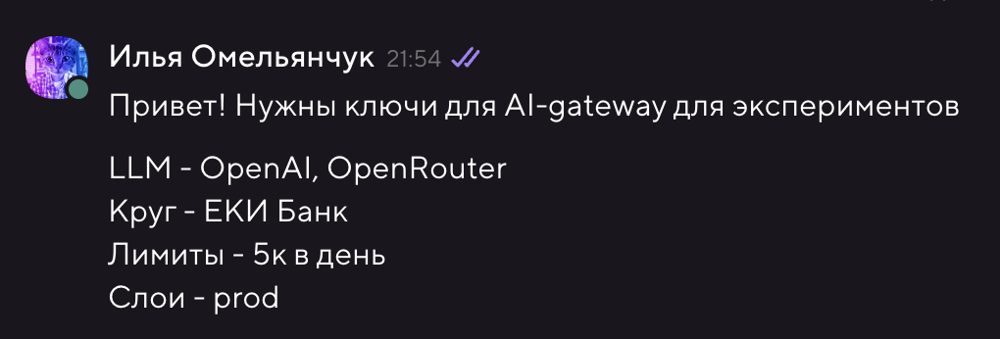

Вайбкод для дизайнеров: собираем кликабельный прототип на React из макета в Figma
Раньше, чтобы показать продукт в деле, нужен был разработчик, две недели и чашечка терпения. Теперь есть AI-агенты — и достаточно одного дизайнера с хорошим промптом.
Этот гайд — для тех, кто умеет делать красиво в Figma, но пишет код примерно с той же уверенностью, с которой разработчики рисуют в Illustrator. И это нормально — именно для вас всё это и придумано.
Что получим в итоге: живой кликабельный прототип в браузере, который можно показать команде, стейкхолдерам или пустить на пользовательское тестирование.
Содержание
- Получение доступа к корпоративному AI
- Что нужно установить
- Подключение AI-агента
- Связка Figma ↔ Агент через MCP
- Собираем прототип шаг за шагом
- Публикуем прототип — делимся ссылкой
- Дизайн-система в файле: зачем и как
- Готовые промпты — бери и используй
- Что-то пошло не так?
Словарик: что за слова такие
Если встречаете незнакомый термин — смотрите сюда.
| Слово | Что это на самом деле |
|---|---|
| Терминал | Текстовое окно, в которое вводят команды. Как командная строка для компьютера. Мы будем использовать терминал прямо внутри редактора кода — ничего страшного |
| Редактор кода / IDE | Программа для написания кода. Как Figma, только для кода. Мы будем использовать VS Code или Cursor |
| API-ключ | Пароль, который даёт агенту право пользоваться AI-моделью |
| Base URL | Адрес сервера с AI-моделью. Выглядит как ссылка |
| MCP | Протокол, через который агент «видит» ваш дизайн в Figma — слои, размеры, тексты |
| React | Популярная технология для создания интерфейсов. Агент будет писать код на ней за вас |
| npm | Менеджер пакетов — устанавливает нужные библиотеки командой в терминале |
| Git / Commit | Система сохранения версий. Как «История версий» в Figma |
1. Получение доступа к AI Gateway
Агенту нужно чем-то думать. Для этого — доступ к AI-модели через корпоративный AI Gateway.
Как получить API-ключ
- Откройте канал @llm_support в Коннекте: connect.tochka.com/tochka/channels/llm-support/
- Напишите сообщение примерно такого формата:
Привет! Нужны ключи для AI-gateway для экспериментов
LLM - OpenAI, OpenRouter
Круг - ЕКИ Банк
Лимиты - 5к в день
Слои - prod
- Дежурный уточнит детали, если что-то не ясно
- Ключ придёт вам в личку в Коннекте через бота

⚠️ Важно: API-ключ — это как пароль. Никому его не показывайте и не отправляйте в общие чаты.
Что вы получите
После одобрения у вас будет две вещи, которые понадобятся для настройки агента:
- Base URL — адрес AI Gateway:
https://ai-gateway-api.query.consul-prod/api/v1/compatible/openai - API Key — ваш персональный ключ:
sk-xxxx...
Запишите обе строки в безопасное место — скоро понадобятся.
🔴 ВАЖНО: не отправляйте в агент конфиденциальные данные! AI-агент передаёт всё, что вы пишете, на сервер с моделью. Никогда не вставляйте в чат агента: пароли, токены доступа, персональные данные клиентов, внутренние секреты и ключи. Агент — это инструмент для прототипирования, а не хранилище секретов.
Какую модель выбрать
Не все модели одинаково хороши для написания кода. Вот что рекомендуем:
| Модель | Для чего подходит | Рекомендация |
|---|---|---|
| Claude Opus 4.6 | Лучший выбор для кодинга — отлично понимает контекст, пишет чистый код, хорошо работает с React | 👈 Рекомендуем |
| Gemini 3.1 Pro | Отличная альтернатива — быстрая, хорошо справляется с большими проектами | 👈 Рекомендуем |
| GPT-4o | Хороший универсал, но для кода чуть слабее Opus и Gemini | Подойдёт |
| GPT-4o-mini | Быстрая, но менее точная — для простых правок | Для мелочей |
💡 Совет: начните с Claude Opus 4.6 — он лучше всех понимает дизайн-системы и пишет аккуратный React-код. Если нужна скорость — переключитесь на Gemini 3.1 Pro.
💡 Технический момент, который не обязательно понимать: AI Gateway притворяется OpenAI API. Поэтому в настройках агента мы выбираем провайдера «OpenAI Compatible» и вставляем туда наш корпоративный адрес. Агент даже не заметит разницы.
2. Что нужно установить
Два инструмента — и можно работать.
VS Code — редактор кода
Это программа, в которой живёт наш проект. Выглядит немного как текстовый редактор, но умеет намного больше.
- Зайдите на code.visualstudio.com
- Нажмите Download — скачается установщик под вашу систему
- Установите как обычную программу
- Запустите
Альтернатива: Cursor — это тот же VS Code, но с встроенным AI-ассистентом. Если планируете пользоваться им — просто скачайте Cursor вместо VS Code. Всё остальное в гайде работает одинаково.
Node.js — движок для запуска проектов
Без этого прототип не запустится в браузере.
- Зайдите на nodejs.org
- Скачайте версию LTS — это стабильная, рекомендованная версия
- Установите (нажимайте «Далее» на каждом шаге)
Проверьте, что всё работает:
- Откройте терминал:
- Mac:
Cmd + Пробел→ напечатайте «Terminal» → Enter - Windows:
Win + R→ напечатайтеcmd→ Enter
- Mac:
- Введите
node -vи нажмите Enter - Должна появиться версия, например
v20.11.0— это значит, всё в порядке ✅
3. Подключение AI-агента
Агент — это ваш напарник-разработчик. Вы пишете ему на обычном языке, что хотите, он создаёт и редактирует файлы, запускает команды. Разница с реальным разработчиком: агент не уходит на обед и не спрашивает «а зачем нам это вообще нужно».
У нас три варианта:
| Cline | Continue | Cursor | |
|---|---|---|---|
| Тип | Расширение VS Code | Расширение VS Code | Отдельная программа |
| Цена | Бесплатно | Бесплатно | $20/мес (есть бесплатный лимит) |
| Корпоративный API | ✅ | ✅ | ✅ |
| Рекомендуем | 👈 Да | Да | Если готовы платить |
Вариант А: Cline (рекомендуем)
Шаг 1. Установка
- Откройте VS Code
- Нажмите иконку расширений в левой панели — это четыре квадратика, один из которых немного отлетел (
Cmd+Shift+X) - В поиске напечатайте Cline
- Нажмите Install
Шаг 2. Подключение корпоративной модели
- В левой панели VS Code появилась иконка Cline (похожа на робота) — нажмите на неё
- Нажмите на ⚙ шестерёнку вверху панели Cline
- В поле API Provider выберите
OpenAI Compatible - Заполните три поля:
- Base URL →
https://ai-gateway-api.query.consul-prod/api/v1/compatible/openai - API Key → ваш ключ из шага 1
- Model ID → название модели, например
claude-opus-4.6илиgemini-3.1-pro
- Base URL →
- Нажмите Done
Всё. Теперь можно писать Cline'у в чат — и он будет делать код. 🎉
Вариант Б: Continue
Шаг 1. Установка
Cmd+Shift+X → поиск Continue → Install
Шаг 2. Подключение корпоративной модели
- Нажмите
Cmd+Shift+P— откроется строка поиска команд вверху окна (это очень полезная штука, запомните её) - Напечатайте
Continue: Open config.jsonи нажмите Enter - Откроется файл настроек. Найдите строчку
"models": [и добавьте после открывающей скобки[:
{
"title": "Corporate LLM",
"provider": "openai",
"model": "название-вашей-модели",
"apiKey": "ВАШ_API_КЛЮЧ",
"apiBase": "https://ai-gateway-api.query.consul-prod/api/v1/compatible/openai"
},
- Сохраните файл (
Cmd+S) - Внизу чата Continue выберите «Corporate LLM» из списка моделей
Вариант В: Cursor
- Скачайте и установите Cursor
- Откройте Settings (иконка шестерёнки внизу слева) → Models
- Прокрутите вниз до раздела OpenAI API Key
- Вставьте ваш API-ключ
- В поле Override OpenAI Base URL вставьте ваш корпоративный URL
- В разделе Model Names введите название модели и нажмите +
- Выберите добавленную модель в чате агента
4. Связка Figma ↔ Агент через MCP
Агент умный — но он не видит ваш экран. Без специальной связки вы бы объясняли ему на словах: «ну там заголовок, под ним картинка, кнопка синяя...». Это долго и неточно.
MCP (Model Context Protocol) — это протокол, который позволяет агенту открыть ваш Figma-файл и прочитать его изнутри: какие слои, какие размеры, какие тексты, как они расположены. Как если бы агент сам открыл Figma и посмотрел на макет.
MCP встроен прямо в Figma Desktop App через Dev Mode — ничего дополнительно устанавливать не нужно.
Шаг 1. Включите Dev Mode MCP в Figma
- Скачайте и откройте Figma Desktop App — figma.com/downloads (браузерная версия не подойдёт!)
- Откройте любой файл в Figma
- Переключитесь в Dev Mode — кнопка в правом верхнем углу (или шорткат
Shift+D) - Figma автоматически запустит локальный MCP-сервер на вашем компьютере — агент сможет к нему подключиться
Шаг 2. Получите Figma Access Token
В Figma есть понятие «токен» — это не только дизайн-токен, но ещё и ключ доступа. Нам нужен Personal Access Token.
- Откройте figma.com в браузере
- Нажмите на аватарку → Settings
- Прокрутите до раздела Personal Access Tokens
- Нажмите Generate new token, дайте имя (например,
MCP Agent) - Сразу скопируйте токен — после закрытия окна он больше не покажется
Шаг 3. Создайте папку проекта
- Откройте Finder (Mac) или Проводник (Windows)
- Зайдите в «Документы» или любое удобное место
- Создайте новую папку. Назовите её латиницей, без пробелов: например,
onboarding-prototype
Шаг 4. Откройте папку в VS Code
- Способ 1: VS Code → меню File → Open Folder... → выберите папку
- Способ 2 (удобнее): Правый клик на папке в Finder → Открыть с помощью → VS Code
Шаг 5. Настройте MCP в агенте
Попросите агента создать файл конфигурации за вас. Напишите ему в чат:
Для Cline — напишите:
Создай файл .cline/mcp_settings.json со следующим содержимым:
{
"mcpServers": {
"figma-devmode": {
"url": "http://127.0.0.1:3845/sse"
}
}
}
Для Cursor — напишите:
Создай файл .cursor/mcp.json со следующим содержимым:
{
"mcpServers": {
"figma-devmode": {
"url": "http://127.0.0.1:3845/sse"
}
}
}
💡
127.0.0.1:3845— это Figma Desktop, запущенная на вашем же компьютере. Никакого внешнего сервера не нужно.
5. Собираем прототип шаг за шагом
Вот как выглядит полный флоу:
Макет в Figma → Агент читает его через MCP → Агент пишет код → Прототип в браузере
Перед стартом убедитесь:
- ✅ VS Code открыт с папкой проекта
- ✅ Агент подключён и отвечает
- ✅ Figma Desktop открыта с вашим файлом
- ✅ Файл конфигурации MCP создан
Шаг 1. Запускаем проект
Напишите агенту в чат:
Создай новый React-проект с Vite.
Добавь React Router для навигации между страницами.
Структура папок: src/pages, src/components, src/styles.
Агент сделает всё сам. Периодически он будет спрашивать разрешения что-то сделать — нажимайте Approve. Это нормально, он просто вежливый.
Шаг 2. Отдаём дизайн-систему
Если вы сделали файл с правилами дизайн-системы (см. раздел 6) — сначала передайте его агенту:
Прочитай файл design-system.md — это наша дизайн-система.
Создай CSS-переменные на основе этих токенов.
Шаг 3. Собираем первый экран
- В Figma Desktop кликните на нужный фрейм — он выделится
- Перейдите в VS Code и напишите:
Посмотри на выделенный фрейм в Figma через MCP.
Это экран «Главная страница».
Реализуй его как React-компонент.
Используй CSS-переменные из дизайн-системы. Тексты — точно из макета.
- Подождите пока агент создаст файлы
- Агент сам запустит проект командой
npm run dev— в терминале появится ссылка видаhttp://localhost:5173. Откройте её в браузере — это ваш прототип
Шаг 4. Правьте, пока не понравится
Смотрите в браузере, сравнивайте с Figma, пишите агенту:
Отступ между заголовком и подзаголовком — 16px, а не 24px.
Кнопка должна быть на всю ширину.
Цвет иконки — Text Secondary из дизайн-системы.
Это нормальный процесс. 5–10 правок на экран — не много.
Шаг 5. Добавляем остальные экраны
Повторите шаги 3–4 для каждого экрана. Потом свяжите их навигацией:
Добавь навигацию:
- кнопка «Продолжить» на экране Onboarding 1 → переход на Onboarding 2
- кнопка «Назад» → возврат
- нижний таб-бар: Главная, Поиск, Профиль (активный подсвечивается цветом Primary)
Правила хорошего вайбкода
| 🎯 Один экран за раз | Не просите «сделай всё приложение» — хорошо не сделает |
| 👀 Проверяйте сразу | Смотрите в браузере после каждого экрана |
| 📏 Конкретные числа | «16px» лучше, чем «чуть меньше» |
| 🔄 Не бойтесь итераций | Вайбкод — это диалог, а не одна команда |
| 💾 Сохраняйте прогресс | Периодически просите: «Сделай git commit» |
6. Публикуем прототип — делимся ссылкой
Прототип готов и работает у вас на компьютере — теперь нужно поделиться им. Есть два способа: быстрый и правильный.
Вариант А: Netlify Drop — проще не бывает
Это буквально «перетащи папку — получи ссылку». Ничего регистрировать не обязательно.
- Попросите агента собрать готовую статическую версию проекта:
Собери проект командой npm run build.
После сборки в папке проекта появится папка dist/ — покажи где она.
- Откройте app.netlify.com/drop
- Перетащите папку
dist/прямо в окно браузера - Через несколько секунд получите ссылку вида
https://random-name-123.netlify.app
Ссылка работает сразу. Зарегистрируйтесь на Netlify, чтобы потом переименовать адрес или обновить версию.
Вариант Б: GitHub Pages — красиво и бесплатно навсегда
Чуть сложнее, зато прототип будет по адресу https://ваш-ник.github.io/название-проекта.
Шаг 1. Зарегистрируйтесь на GitHub
Если аккаунта нет — зайдите на github.com и создайте (это бесплатно).
Шаг 2. Сделайте репозиторий
- Нажмите + → New repository
- Дайте имя (например,
onboarding-prototype), выберите Public - Нажмите Create repository
- Скопируйте адрес репозитория — он нужен для следующего шага
Шаг 3. Залейте проект
Напишите агенту:
Настрой и задеплой проект на GitHub Pages.
Адрес репозитория: [вставьте ссылку, например https://github.com/ваш-ник/onboarding-prototype]
Нужно:
1. Установить пакет gh-pages
2. Добавить в vite.config.ts параметр base с именем репозитория
3. Добавить в package.json скрипт deploy
4. Добавить remote origin и сделать первый push
5. Запустить npm run deploy
Агент сделает всё сам и даст финальную ссылку.
После деплоя GitHub Pages включается не мгновенно — подождите 2–3 минуты, потом откройте ссылку.
7. Дизайн-система в файле: зачем и как
Агент через MCP видит структуру Figma: элементы, размеры, положение. Но ваши токены — нет. Он не знает, что Primary — это #6C5CE7, а spacing-md — это 16px. Без подсказки он начнёт придумывать цвета сам — и будет неправильно.
Решение простое: мы уже подготовили для вас готовую папку design system со всеми токенами, переменными и шрифтами.
Что нужно сделать:
- Скачайте папку
design system(вам должны были передать её вместе с этим гайдом). - Скопируйте её прямо в корень вашей папки с проектом (туда же, где вы открыли VS Code).
- В папке лежит файл
AI_PROMPT_DESIGN_SYSTEM.md— это специальная инструкция для агента.
Как использовать: скажите агенту в самом начале работы:
Прочитай файл "design system/AI_PROMPT_DESIGN_SYSTEM.md" — это наша дизайн-система.
Все компоненты должны использовать эти токены и шрифты.
8. Готовые промпты
Скопируйте нужный промпт, замените
[текст в скобках]на своё — и отправляйте агенту.
🚀 Создать проект с нуля
Создай новый React-проект с Vite и TypeScript.
Установи React Router для навигации.
Структура: src/pages, src/components, src/styles.
Внимательно прочитай файл "design system/AI_PROMPT_DESIGN_SYSTEM.md". Подключи дизайн-систему (файлы .css и шрифты) к проекту согласно инструкции в этом файле.
Создай src/styles/global.css с базовым ресетом стилей.
🖼 Собрать экран из Figma
Посмотри на выделенный фрейм в Figma через MCP.
Это экран [название].
Реализуй как React-компонент в src/pages/[PageName].tsx.
Стили — в src/pages/[PageName].css.
Обязательно используй готовые CSS-переменные из нашей дизайн-системы (design system/variables.css). Не придумывай цвета и отступы.
Тексты бери точно из макета. Для иконок — эмодзи или символы.
🔗 Добавить навигацию
Настрой React Router в App.tsx.
Связки:
- [Экран 1] → [Экран 2] по кнопке [название]
- [Экран 2] → [Экран 3] по кнопке [название]
- Нижний таб-бар: [таб 1], [таб 2], [таб 3]
Активный таб — цвет Primary из дизайн-системы.
🔧 Поправить детали
На экране [название] исправь:
1. Отступ между [элемент A] и [элемент B] — [N]px
2. Шрифт [элемент] — [размер]px, weight [жирность]
3. Цвет [элемент] — токен [название]
4. [Элемент] должен занимать всю ширину контейнера
📱 Мобильный вид
Сделай экран [название] мобильным:
- max-width: 375px, по центру
- На десктопе — как телефон по центру, с фоном и рамкой
✨ Добавить анимации
Добавь анимации:
- Переход между страницами — плавный fade 300ms
- Кнопки: hover → scale(1.02), press → scale(0.98)
- Карточки: hover → translateY(-2px) и более тёмная тень
📦 Тестовые данные
Создай src/data/mockData.ts с массивом объектов для [контент].
Поля: [перечислите].
Сгенерируй 6–8 реалистичных записей на русском языке.
Используй их в компоненте [название].
✅ Финальная проверка
Пройдись по проекту и проверь:
1. Все страницы открываются без ошибок
2. Навигация работает полностью
3. Стили соответствуют переменным из design-system.md
4. Нет ошибок в консоли браузера
Если что-то нашёл — исправь.
9. Что-то пошло не так?
Агент сделал совсем не то, что на макете
MCP передаёт структуру — иерархию, размеры, тексты — но не картинку. Агент «читает» дизайн, а не «видит» его.
Что поможет:
- Добавьте конкретики: пиксели, цвета, порядок элементов
- Перетащите скриншот макета прямо в чат агента (Cline и Cursor это поддерживают)
Стили не совпадают с нашей дизайн-системой
Агент просто не знал, какие у вас токены, и придумал свои.
Что сделать:
- Убедитесь, что папка
design systemлежит в корне проекта. - Напомните агенту: «перечитай инструкцию в design system/AI_PROMPT_DESIGN_SYSTEM.md и используй только переменные из variables.css»
MCP не подключается / агент не видит Figma
- Figma открыта в Desktop App, а не в браузере?
- Файл конфигурации создан и в нём настоящий Figma Token?
- Попробуйте перезапустить VS Code
Проект не открывается в браузере
Напишите агенту:
Проект не запускается — есть ошибки. Посмотри в терминал и исправь.
Агент «забыл» про наши договорённости и снова делает по-своему
Агент не помнит бесконечно долго. Чем длиннее сессия — тем больше он забывает предыдущий контекст.
Что помогает:
design-system.mdвсегда под рукой у агента — он всегда может перечитать- Напомните ключевые правила в промпте: «используй нашу дизайн-систему, не придумывай стили»
Чеклист: готов к старту?
- Получил API Key и Base URL у команды инфраструктуры
- Установил VS Code (или Cursor)
- Установил Node.js
- Установил расширение Cline (или Continue)
- Подключил корпоративную модель: Provider =
OpenAI Compatible→ вставил URL и ключ - Установил Figma Desktop App
- Включил Dev Mode в Figma Desktop
- Получил Figma Personal Access Token
- Создал папку проекта и открыл её в VS Code
- Попросил агента создать файл конфигурации MCP
- Скачал папку
design systemи положил её в проект - Попросил агента создать React-проект и прочитать дизайн-систему
- Выделил первый фрейм в Figma и написал промпт
- Задеплоил на Netlify Drop или GitHub Pages и поделился ссылкой 🔗
Есть вопросы?
Если что-то не получается, не понятно или хочется обсудить — пишите Илье Омельянчуку:
- Telegram: @xripunov
- Коннект: connect.tochka.com/tochka/direct/@omelyanchuk/
Поехали 🚀